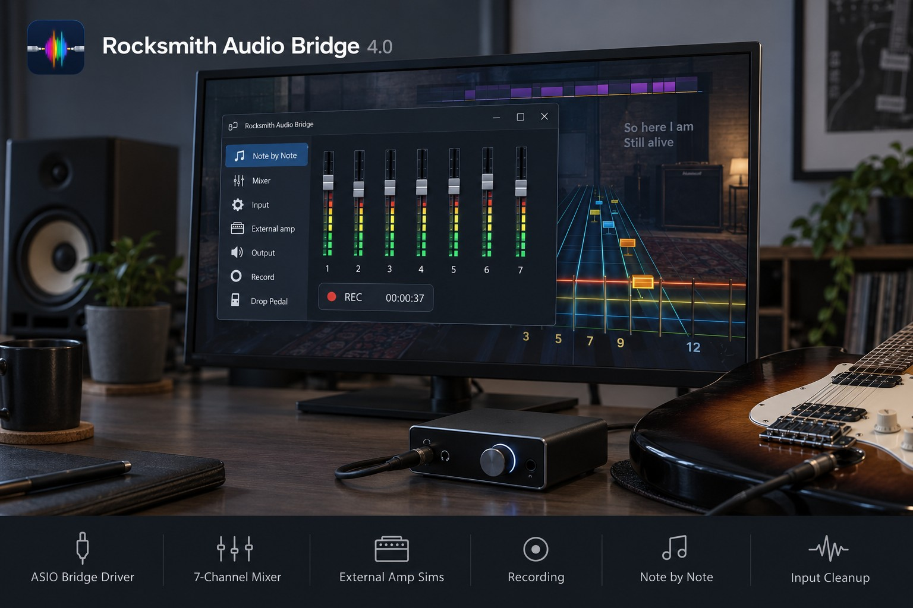
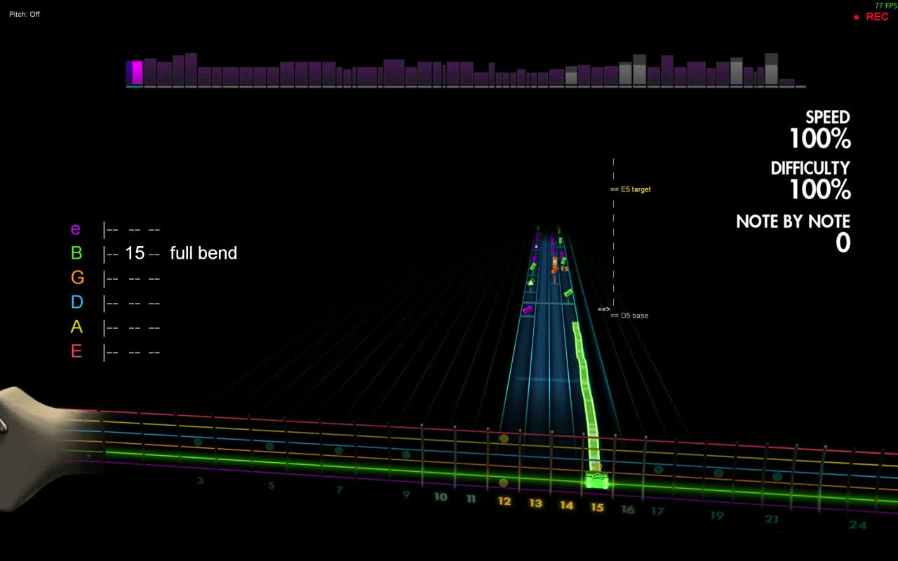

Philip Igo Unity programmer
Gameplay.
Systems.
Tools.
I build game systems and developer tools that make ambitious ideas playable, reliable and easier to ship. 7+ years working in Unity and C# across commercial teams and independent projects.

Selected work
03 games
Commercial
games.
Team projects at XR Games and Rebellion. My work spans gameplay, reusable cross-platform save and social systems, VR optimisation, QA fixes and release support.


Systems built once. Shipped across games.
I independently authored a reusable save package for Zombieland: Headshot Fever Reloaded, then extended it across Steam, Oculus and Sony for Zombie Army VR. I also independently authored a reusable social integration package for those platforms, integrating and iterating both packages across Zombie Army VR and Starship Troopers: Continuum. See the systems work in context ↗

Independent showcase / 02
Audio that
connects.
Rocksmith Audio Bridge is a Windows C++ mod built on RSMods. It connects the game to flexible audio routing, pitch shifting, external amp simulation, recording and note-by-note practice.
Upstream credit: Lovrom8 / RSMods
Read the case study ↗In development
02 projects

In development
StatSystemPro
A reusable Unity stats package with editor tools to inspect relationships, modifiers and runtime changes.
Pre-release software. Names and visuals may change.

In development
WorldGeneratorPro
A procedural 2D world-generation framework for Unity, with seeded terrain, roads, districts, buildings and interior layouts. Generation data is kept separate from rendering so each stage can be extended.
Pre-release software. Names and visuals may change.
A little context
Making complex
things feel simple.
I’m a programmer based in West Yorkshire, UK. I care about clear systems, responsive interactions and the small details that help a team move confidently from prototype to release.
Aug 2025—present Independent
May—Aug 2025 Rebellion
Mar 2022—Jan 2025 XR Games
2020—2022 Enquirymax
2018—2020 Galleos

 Selected 3D artwork
Selected 3D artworkand supporting art background
Available for programming roles